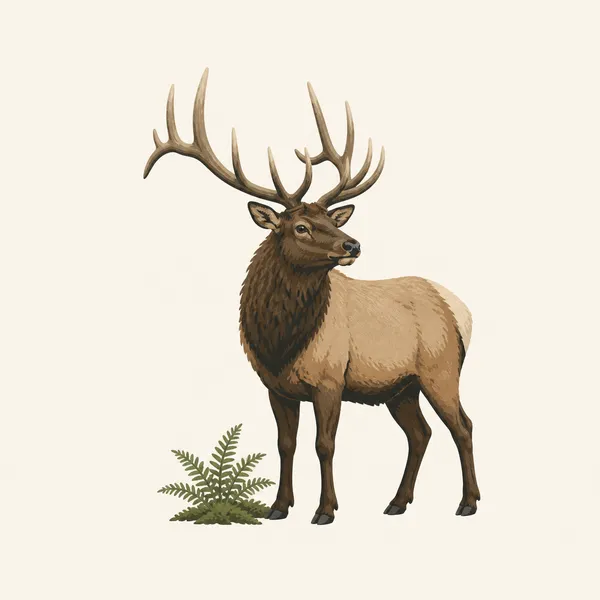
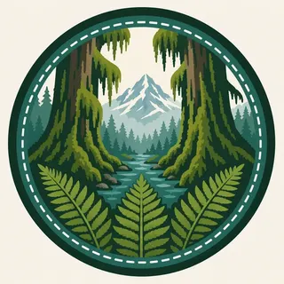

01
West-side rainforest
Hall of Mosses and similar valley walks are the public face of a forest that also includes huge downed spruce and a thick shrub layer. Stay on the puncheon. The green is living.
TrailMark Archive Edition
Washington | Olympic Peninsula
Moss, river, and a glacier-bearing mountain share one peninsula, with a wild Pacific shore on the outer edge.
Archive No. TM-OLY-007
National Park since 1938
Collection Pacific Parks
Park Overview
Olympic National Park was established in 1938 on Washington's Olympic Peninsula. It holds glacier-capped mountains, temperate rainforest, and a roadless Pacific coastline in one boundary.
The mountains wring moisture from Pacific storms, so the west-side valleys grow Sitka spruce, western hemlock, and bigleaf maple hung with moss, while the northeast rain shadow is noticeably drier.
The park is also a refuge for Roosevelt elk, the animal the original monument was argued for. The coast, the forest, and the peaks are one watershed story.
Emotional Thesis
In the Hoh and Quinault valleys the light arrives already filtered. Sound drops into moss. A river can run the color of glass and still be cold enough to hurt.
Drive to the high country and the same day becomes snow, marmot whistle, and a view of the Strait. Olympic is a park you do not summarize from one trailhead.
Landscape Highlights
01
Hall of Mosses and similar valley walks are the public face of a forest that also includes huge downed spruce and a thick shrub layer. Stay on the puncheon. The green is living.
02
The high road looks back at the Strait of Juan de Fuca and across alpine meadows to the Olympic interior. Snow closes it for long stretches. Check NPS, not a summer memory.
03
Rialto, Ruby, and Kalaloch are openings onto a coastline the highway does not follow. Headlands, sea stacks, and tide decide whether a walk continues.
Wildlife
Olympic animals match the three landscapes: forest ungulates, alpine mammals, and a rich intertidal.

01
Roosevelt elk use the valleys. Give them the trail if they are crossing, and do not crowd a herd for a picture.
02
Olympic marmots live in the high meadows and are found only in these mountains. They are a peninsula specialty.
03
Tidepools and offshore waters bring sea stars, anemones, and marine mammals to the same park as the spruce.
Geology
The Olympic Mountains are a scrambled stack of seafloor rock, lifted and then carved by glaciers that remain on the high peaks.
01
Mount Olympus and its neighbors still carry glaciers. They are shrinking. A photograph of ice here is also a photograph of change.
02
U-shaped valleys on the west side feed the rainforest rivers. The flat valley floors are glacial gifts.
03
Sea stacks on the coast are the resistant leftovers of a shoreline that used to be farther out.
Waterfalls are loud and the high country is still snow. Valley trails are the reliable walk.
The clearest shot at Hurricane Ridge and the coast. Even then, a marine layer can erase the peaks by afternoon.
Maple and vine maple color against the conifers. Rivers drop and the salmon story, where runs allow, belongs to this season. Follow local rules.
Storms on the coast and deep snow in the mountains. The rainforest is open and dark green, which is its native condition. Check road reports.
Photography
Olympic light is soft. The mistake is waiting for a hard sun the forest was not built to receive.
01
Even light keeps the greens from turning black in the shadows. A bright day in the Hoh is often a worse photograph.
02
A horizontal frame of a rainforest can look like a green wall. Turn the camera for the height of the spruce.
03
Coast stacks and pools depend on the tide. A beautiful beach at the wrong hour is a short beach with a cliff at your back.
Field Notes
If you only walk one trail here, you have met one of the parks inside the park, and you should say so honestly.
TrailMark Field Notes

Badge Story
The Olympic mark is moss and mountain in one circle, with the understanding that a third landscape, the Pacific shore, sits just outside the frame.
The green is temperate rainforest, darker than a summer meadow.
Snow on the peaks keeps the badge from being only a forest icon.
It should not be confused with the redwood parks farther south. This green is wetter and mossier.
Archive No.007
LocationOlympic Peninsula
ReleasePacific Mark
Stewardship / Safety
Olympic trouble is a rising tide on a headland, a snowy ridge road, or a social trail punched into moss. Check NPS for roads and coastal hazards.
On the wilderness coast, carry a tide table and do not round a headland on a guess.
Elk are large. A phone camera is not a reason to close the distance.
Stay on boardwalks. Moss and nurse logs are the forest growing, not a softer path.
Pack out waste. The rainforest hides litter slowly and forgives it never.
Current conditions, fees, and alerts are on the National Park Service site.
Continue the Archive
Acadia is the Atlantic granite version of a coast park. Mount Rainier, still ahead in the archive, is the single-volcano counterpoint to this whole range.